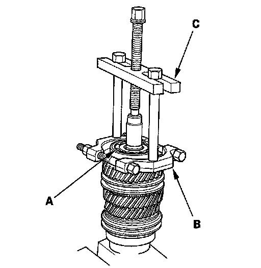
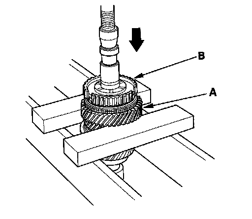
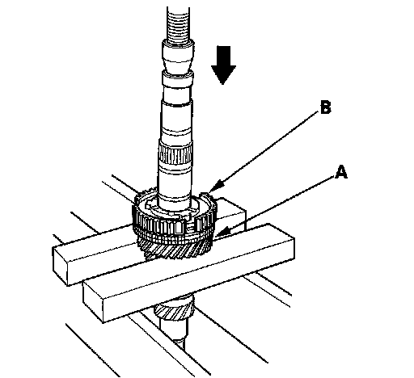

Mainshaft Disassembly
Mainshaft Disassembly1. Remove the angular ball bearing (A) using a commercially available bearing separator (B) and bearing puller (C).

2. Support 5th gear (A) on steel blocks, and press the mainshaft out of the 5th/6th synchro hub (B).
NOTE: Do not use a jaw-type puller; it can damage the gear teeth.

3. Support 3rd gear (A) on steel blocks, and press the mainshaft out of the 3rd/4th synchro hub (B).
NOTE: Do not use a jaw-type puller; it can damage the gear teeth.
